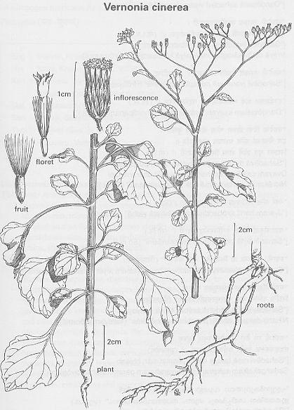

|
ECONOMICALLY
IMPORTANT PLANTS OF INDIA |
| Under-utilized Food and Fodder species and their wild relatives | Contributed by Ms.M.L Annapurna And Dr. Dhanapal, UAS, Bangalore |
Vernonia cineria Less.
Taxonomic Details

----- Correct Name
----- Classification
----- Synonyms
----- Common Names
Other Biological Details
----- Habit and Habitat
----- Diagnostic Features
----- Reproductive Biology
---------- Breeding System
---------- Phenology
---------- Pollinators
---------- Seed Biology
----------Seed Germination
------ Cultivation
----- Major Pests and Diseases
Economic Potential and Uses
----- Parts Used
----- Uses
----- Harvesting Practices
----- Produce and Products
----- Chemistry
----- Processing Techniques
----- Other uses
----- Economic Potential to the
Country
----- Export Potential
Miscellaneous Information
Literature
Status:
Along slopes of ghats, Coastal areas, Common, Cultivated fields and Plains,Disturbed
forests,Drying pools,Fields,forest undergrowth,Forests,garden weed,Gardens,Gardens
and Roadsides,Hedges,Hill forests,Misc., Forests,none,Open areas,open forest,open
grasslands,Paddy fields,Plains,Rice fields and Marshy areas,Road sides,rock,Rock
crevices,Rocky & sandy habitat,Sal forests,Variable habitat,waste land,Waste
lands,
BioticZone: Deccan Plateau,Kanara,Konkan,Konkan plain,none,Palaeotropics,Tropics,West
Coast,Western Ghats,
Soil: sandy loam,
Misc: achrecreek,akeri,Amar sagar garden,Anantpur Forest,Annappa falls,Badami-Ananthpur,Baghnadi,Balotra,Barhe,bhairy
pathar,Bhanvad,Saurashtra,Bhavnagar,Bichpuri campus,Birhi,Budbhum,Calangute
sea beach,castle area,Changlare-Bidar Road,Charmadi ghats,Chelama,Corbett National
Park,Dabar,Dahibav,deogad,Deogiri Reserve Forest,Deopura,Dhunvao,Diguvametta,Durg
R.F.,Dwaraka,Edacode,Nilambur,Five falls,Ghumli,onBardahillsfromBordevionGirnar
& Sasangir,Gondal,Gulemalleblad,Harihar-Harpanhali Road,Hollong,Huliyar-Hiriyur
Road,Jamnagar,Jogimatti (State Forest),Jolana,Kailas Baug,kala naddi,Kamsandra,Karla,Kasari,Kasmar,Kileshwar
on Barda hills,Kishanganj,Koppal-Kushtagi Road,Kotigehar on the way to Kalhattigiri,Kotri
village - Aligarh road.,Mahaballeshwar,malwan,Manasagangotri,Mangaon,Mangrul
village,Markandey hill,Masoli,Matheran,Matheran(bombay),mumbri,Murud,Nagaon,Nagoa,Narnala,near
Aruna river, Kharad,none,on hill slopes,Panaji,Pasarkhet,Patancheru,Patur,Peccheruvu,Pen,phondaghat,Pipalkhunt,Raipur,Rajkot,Ramgarh,Rangapurama,Regional
Research Station,Brahmavar,Reserve forest,Rozi & Ranjit Sagar, near Jamnagar,Salkumar,satara,Shergarh,Sind
(bhola puran),Sind (tata district),Sindewadikuran area,Singhari,Sitanadi,Tannepada-Kharshet,tar,Taurenga,Tekkumalai,Tordi
Sagar,Trombay,Walayar forest,Wanoja,
Country: Africa, Asia, Australia, Burma, India, Indomalaysia, Malayasia, New
Zealand,Pakistan,Sri Lanka,Tropical africa,
Zone: Central,East,none,North,South,West,
State: Andhra Pradesh,Bihar,Goa, Daman, Diu,Gujarat,Himachal Pradesh,Karnataka,Kerala,Madhya
Pradesh,Maharashtra,none,Rajasthan,Tamil Nadu,Uttar Pradesh,West Bengal,
District: Agra,Akola,Bangalore,Banswara,Barmer,Belgaum,Bidar,Bijapur,Bilaspur,Chamoli,Champaran,Chandrapur,Chikmaglore,Chitradurga,Dakshin
Kannada, Damoh,Dharmapuri,Diu,Durg,Goa,Hassan,Hoshangabad,Jaipur,Jaisalmer,Kangra,Kinnaur,Kodagu,Kolar,Kota,Kurnool,Malappuram,Medak,Mysore,Nasik,none,Palaghat,Pulni,Pune,Raichur,Raigad,Raigarh,Raipur,Rajnandgaon,Salem,Satara,Satna,Sidhi,Sindhudurg,South
Arcot,Tikamgarh,Tiruchi,Tirunelveli,Tonk,Tumkur,Uttar Kannada,Yawatmal,
Talluk: Bardez,Ilhas,JAGALUR,Kankavli,MADHUGIRI,Malpura,none,Pachmarhi,sawantwadi,tenkasi,Wadgaon,
Latitude: 0,18,74,
Longitude: 0,21,73,
Alitude Minimum: 0,250,462,550,1000,
Altitude Maximum: 0,500,850,2000,
Temperature Minimum: 0,21,
Temperature Maximum: 0,32,
Rainfall Maximum: 0,2070,
Rainfall Minimum: 0,2080,3500,
DIAGNOSTIC FEATURES :
Herbaceous, hairy, pubescent, leaves
petiolated ovate or laneolate acute obscurely or deeply obturely or acutely
toothed needs about 20 flowered in loose corymbs, involve braets linear laneolate
tips glbrous pappus white or dirty white outer hairs short. one of the commonest
indian weeds, creat, rarely decument, 6-18in., high stem slender, grooved and
ribbed leaves rarely 3 in., long or 1 1/2in., broad membraneous or rather criaceous,
petiole vary variable. heads about 1/4 in., dia., in rounded or open and flat
topped cerymbs ;branches usually devaricate, peduncles slender, with small brets
at the axils inveel scales about 1/6-1/5in., corolla with pubescent lobes. achenes
1/20 in., pappus 1/6 in., outer hairs very short inded. it is impossible to
define the terms of habit and foliage of this very variable plant, which is
on the whole remarkably uniform in its flowers.
REPRODUCTIVE BIOLOGY
Breeding System :
Phenology:
The flowering occurs during February - November and in some places from November-June.
Pollinators:
Seed Biology :
Seed Germination:
MAJOR PESTS & DISEASES
Pests:
Diseases:
Parts used
Whole Plant, Flowers, Seed, Leaves.
Harvesting
Practices
Produce and Products
Chemistry
Triterpenes are the major constituents of the herb. 24-hydroxytaraxer-14 eve
was identified nd the structure was elucidated beta-abysir acetate, beta-amyrin
bezoate,lupeol and its acetate, beta sitosterol, sigmasterol and a-spinosterol
were isolate.Toxicity: No adverse effect was reported on usage
of this plant as a drug.